── Conflicts ────────────────────────────────────────── tidyverse_conflicts() ──
✖ dplyr::filter() masks stats::filter()
✖ dplyr::lag() masks stats::lag()
ℹ Use the conflicted package (<http://conflicted.r-lib.org/>) to force all conflicts to become errors
library(DBI)
Task 1: Read in the Data and Modify
Reading in the data and combining the data frames using the code provided.
d1 =read.table("student-mat.csv",sep=";",header=TRUE)d2 =read.table("student-por.csv",sep=";",header=TRUE)d3=merge(d1,d2,by=c("school","sex","age","address","famsize","Pstatus","Medu","Fedu","Mjob","Fjob","reason","nursery","internet"))print(nrow(d3)) # 382 students
[1] 382
Reading in the data and combining using functions from the tidyverse. It gives me a message “Warning: Detected an unexpected many-to-many relationship between x and y.”
Warning in inner_join(mat2, por2, by = c("school", "sex", "age", "address", : Detected an unexpected many-to-many relationship between `x` and `y`.
ℹ Row 79 of `x` matches multiple rows in `y`.
ℹ Row 79 of `y` matches multiple rows in `x`.
ℹ If a many-to-many relationship is expected, set `relationship =
"many-to-many"` to silence this warning.
Using an inner_join() on all variables other than G1, G2, G3, paid, and absences.
Next, for the math data, Portuguese, and combined data, choosing four categorical variables of interest and converting those into factor variables in each tibble using the mutate() function.
Creating a one-way contingency table. From this table we see that there are 221 people from the data set who are not in a romantic relationship, and 99 people who are.
one_way <-table(exercise_combine$romantic)one_way
no yes
221 99
Creating a two-way contingency table. From this, we can see that there are 85 people who are not in a romantic relationship and chose their student’s school based on it being close to home.
course home other reputation
no 85 58 15 63
yes 33 29 15 22
Creating a three-way contigency table. From this we gather that there are 5 fathers who are in romantic relationships and picked their student’s school based on its reputation.
, , = father
course home other reputation
no 17 17 3 14
yes 10 5 3 5
, , = mother
course home other reputation
no 68 40 11 47
yes 22 20 12 17
, , = other
course home other reputation
no 0 1 1 2
yes 1 4 0 0
Creating a conditional two-way table using table() by subsetting the data by females and then creating the table. We can see here that there are 16 females in the dataset that are in romantic relationships that chose their student’s school based on its proximity to their home.
female_filter <-filter(exercise_combine, sex =="F")female_table <-table(female_filter$romantic, female_filter$reason)female_table
course home other reputation
no 44 25 9 38
yes 21 16 6 15
Create a conditional two-way table using table() by creating a three-way table and subsetting it. From this we see that there are 47 mothers who aren’t in romantic relationships and chose their student’s school based on its reputation.
course home other reputation
no 68 40 11 47
yes 22 20 12 17
Creating a two-way contingency table using group_by() and summarize(). There are 15 people who aren’t in romantic relationships and chose their school based on a reason other than courses, proximity to home, and reputation.
`summarise()` has grouped output by 'romantic'. You can override using the
`.groups` argument.
# A tibble: 2 × 5
# Groups: romantic [2]
romantic course home other reputation
<fct> <int> <int> <int> <int>
1 no 85 58 15 63
2 yes 33 29 15 22
Create stacked bar graph.
stacked <-ggplot(data = exercise_combine |>drop_na(sex, famsup), aes(x = sex, fill = famsup)) stacked +geom_bar() +labs(title ="Stacked Bar Graph of Family Educational Support by Sex", x ="Sex", y ="Family Educational Support")
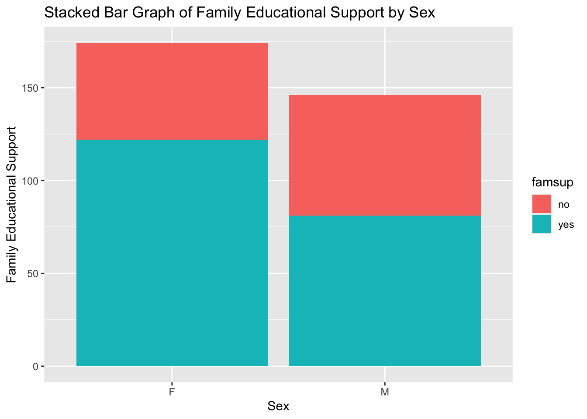
We can see from this graph that females receive more educational support from their family than males. There are more females than males included in the data.
Create side-by-side bar graph
side <-ggplot(data = exercise_combine |>drop_na(school, reason), aes(x = school, fill = reason)) +geom_bar(position ="dodge") +labs( title ="Side-By-Side Bar Graph of Reason by School", x ="School", y ="Reason") +scale_fill_discrete("Reason")side
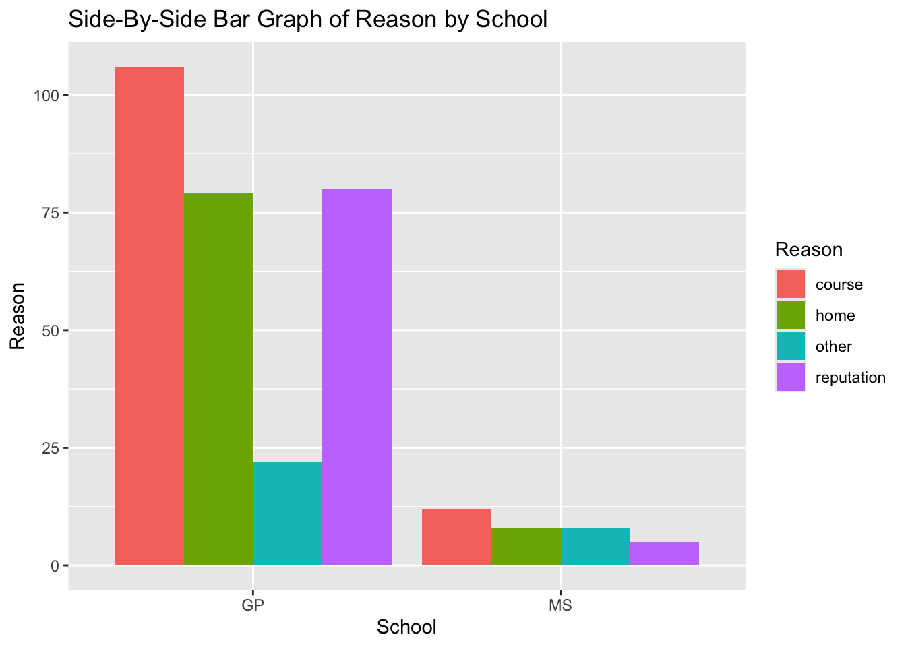
We see from this graph that there are more people in the data who chose Gabriel Pereira (GP) than Mousinho da Silveira (MS). People were most likely to choose their school based on its course offerings for both schools. There is a greater proportion of people who chose their school based on its reputation for GP.
Numeric Variables (and across groups)
Finding measures of center and spread of three variables (age, absences, G1)
`summarise()` has grouped output by 'sex'. You can override using the `.groups`
argument.
# A tibble: 4 × 8
# Groups: sex [2]
sex school mean_age median_age mean_absences median_absences mean_G1
<chr> <chr> <dbl> <dbl> <dbl> <dbl> <dbl>
1 F GP 16.5 16 6.12 4 10.5
2 F MS 17.7 18 3.33 0 10.0
3 M GP 16.3 16 5.10 4 12.0
4 M MS 18 18 3.58 3.5 9.58
# ℹ 1 more variable: median_G1 <dbl>
histogram_age <-ggplot(exercise_combine, aes(x = age)) +geom_histogram(aes(fill = sex)) +labs(title ="Histogram of Age by Sex")histogram_age
`stat_bin()` using `bins = 30`. Pick better value with `binwidth`.
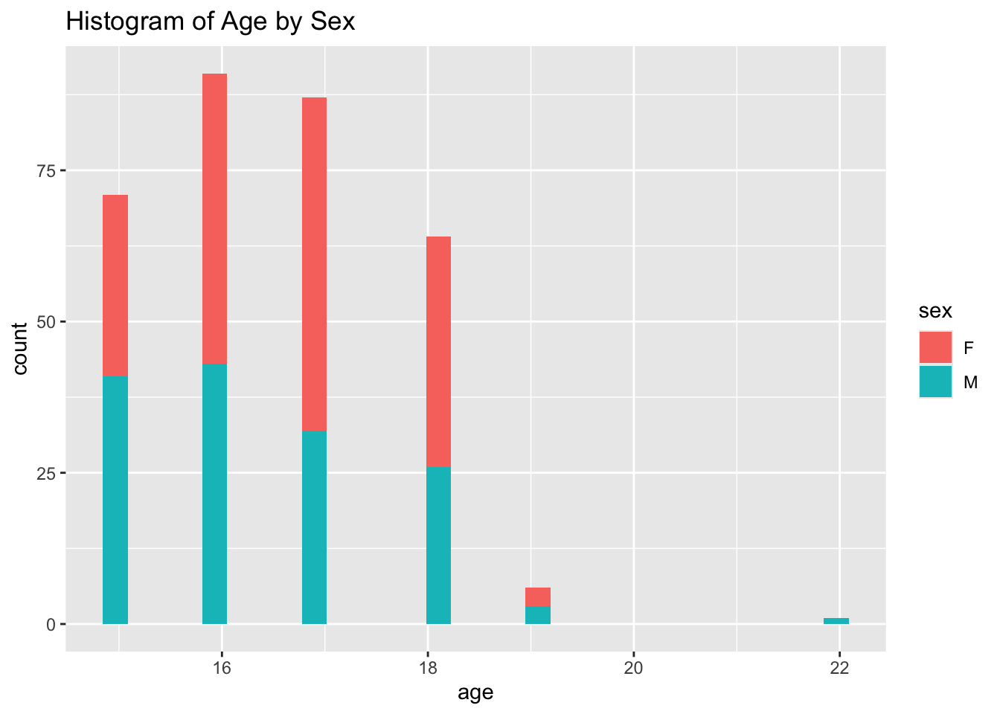
The data looks pretty evenly split for ages/sex based on this histogram. There are definitely more females age 17. The oldest person is a male, which looks to be an outlier which is interesting. I wonder what this 22 year old is doing.
Age Kernel Density Plot
kernel_age <-ggplot(exercise_combine, aes(x = age)) +geom_density(alpha =0.5, aes(fill = sex)) +labs(title ="Kernel Density Plot of Age by Sex")kernel_age
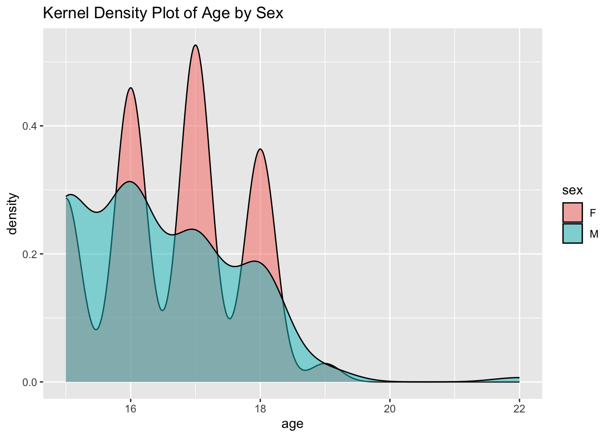
It is very interesting that the female density plot has so many sharp ups and downs. The male data does the same, but not nearly as sharply as the female data. The density goes to 0 as very similar ages for both sexes.
Age Boxplot
boxplot_age <-ggplot(exercise_combine, aes(x = sex, y = age, fill = sex)) +geom_boxplot() +labs(title ="Boxplot of Age by Sex", x ="Sex", y ="Age")boxplot_age
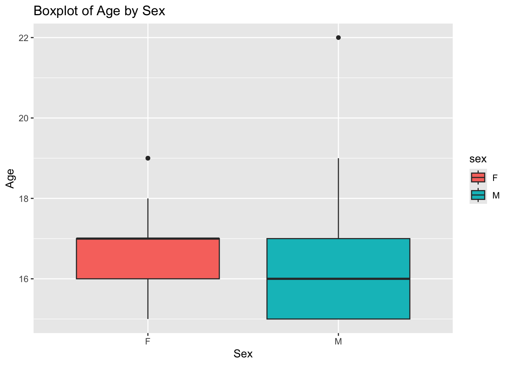
We can see from this boxplot that males have a larger spread of age compared to females. It is interesting that the female box is so compact compared to the male box. It is also interesting that males have a very large age outlier.
Histogram of Absences by Sex
histogram_absences <-ggplot(exercise_combine, aes(x = absences.x)) +geom_histogram(aes(fill = sex)) +labs(title ="Histogram of Absences by Sex", x ="Absences")histogram_absences
`stat_bin()` using `bins = 30`. Pick better value with `binwidth`.
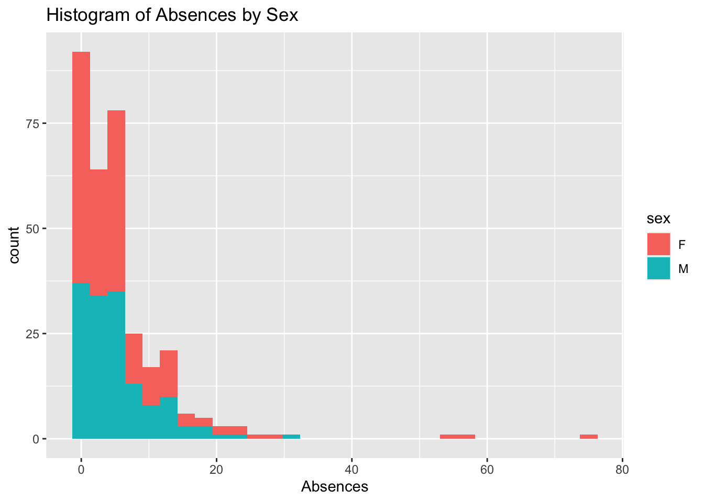
This histogram plot is very different from the other histogram. It looks like there are more females who had 0-3 absences. There are a few females who had rougly 55 absences and 75 absences. This number is crazy to me. I wonder why they missed so many days?
Kernel Density Plot of Absences by Sex
kernel_absences <-ggplot(exercise_combine, aes(x = absences.x)) +geom_density(alpha =0.5, aes(fill = sex)) +labs(title ="Kernel Density Plot of Absences by Sex", x ="Absences")kernel_absences
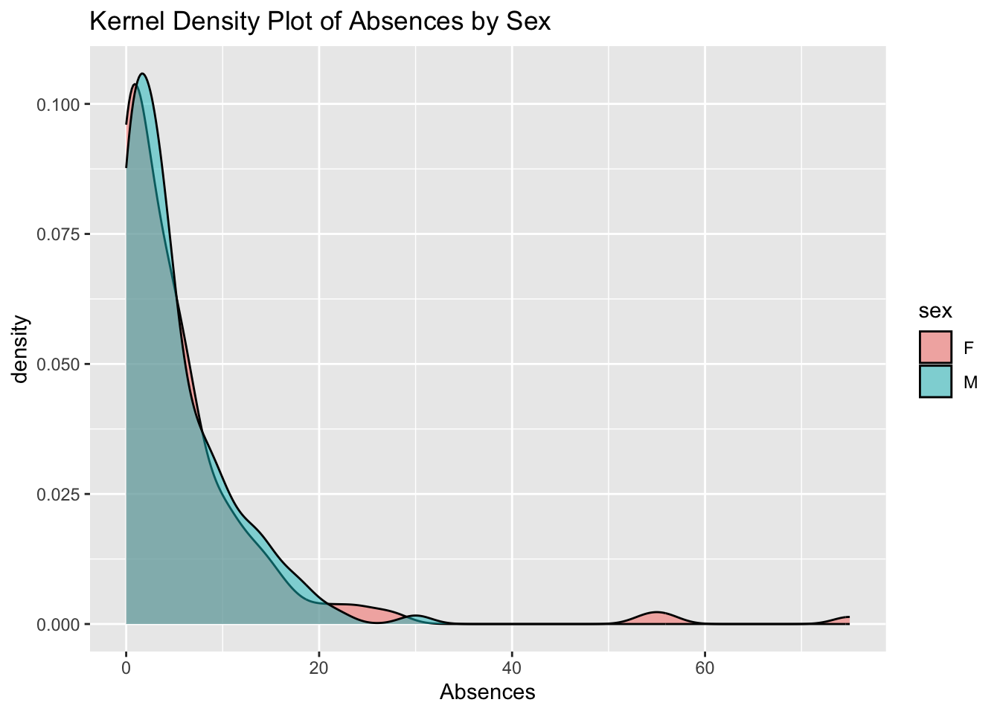
The kernel density plot is very similar for both sexes. It looks like females have a couple of points where the density goes up and then back down. For the most part, the density for the males is pretty flat at 0.
Boxplot of Absences by Sex
boxplot_absences <-ggplot(exercise_combine, aes(x = sex, y = absences.x, fill = sex)) +geom_boxplot() +labs(title ="Boxplot of Absences by Sex", x ="Sex", y ="Absences")boxplot_absences
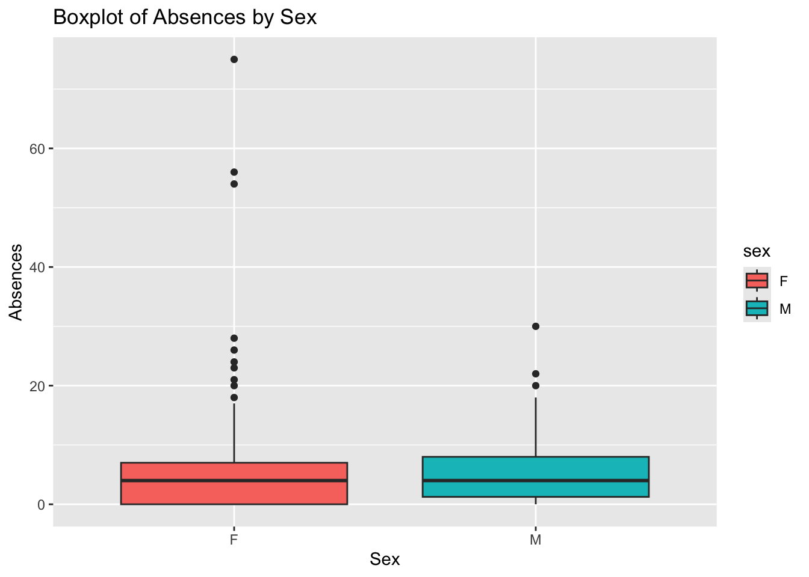
Males have a very similar median absences when compared to females. Females have a lot of outliers, while males only have 3 outliers. The boxes themselves actually look very similar.
Scatterplots relating G3 variable to other numeric variables
scatterplot_G3_age <-ggplot(exercise_combine, aes(x = age, y = G3.x, color = sex)) +geom_point() +geom_jitter(width =0.1, alpha =0.3) +labs(title ="Scatterplot of G3 and Age by Sex", x ="Age", y ="G3")scatterplot_G3_age
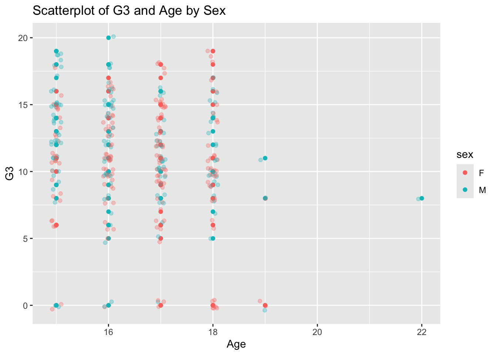
From this graph we can see that younger males (15-16) tend to score the highest compared to females. For ages 17-18 however, females tend to score the highest. There are a few age outliers for men. It looks like there is a good mix of sexes for scores of about 7-15.
scatterplot_G3_failures <-ggplot(exercise_combine, aes(x = failures, y = G3.x, color = school)) +geom_point() +geom_jitter(width =0.1, alpha =0.3) +labs(title ="Scatterplot of G3 and Failures by School", x ="Failures", y ="G3")scatterplot_G3_failures
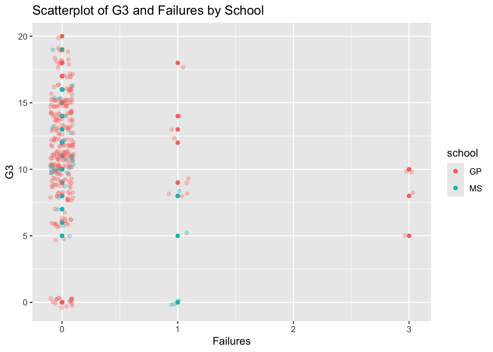
GP has multiple students that had 3 failures, while MS does not have any. A majority of students from MS do not have any failures, while there are 8 students who failed once. A large proportion of GP students never failed, but there are about 14 who failed once.
Repeating the scatter plots but using faceting for another categorical variable
G3_age_facet <-ggplot(exercise_combine, aes(x = age, y = G3.x, color = sex)) +geom_point() +geom_jitter(width =0.1, alpha =0.3) +labs(title ="Scatterplot of G3 and Age by Sex Based on Internet Access", x ="Age", y ="G3") +facet_wrap(~ internet)G3_age_facet
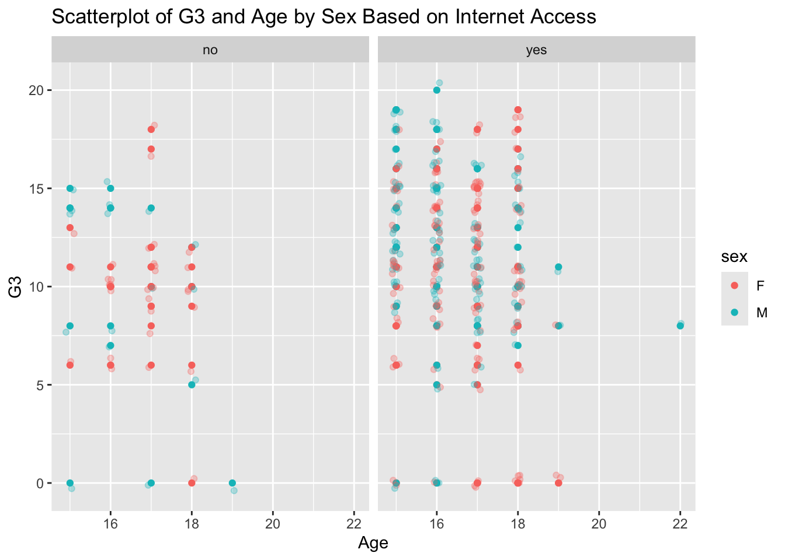
From this graph, it looks like there are slightly more females who do not have interet access compared to males. A majority of students do have internet access, however. It look like younger males with internet access did better than older males with internet access. Older females with internet access seemed to have higher scores than younger females.
G3_failures_facet <-ggplot(exercise_combine, aes(x = failures, y = G3.x, color = school)) +geom_point() +geom_jitter(width =0.1, alpha =0.3) +labs(title ="Scatterplot of G3 and Failures by School Based on Family Size", x ="Failures", y ="G3") +facet_wrap(~ famsize)G3_failures_facet
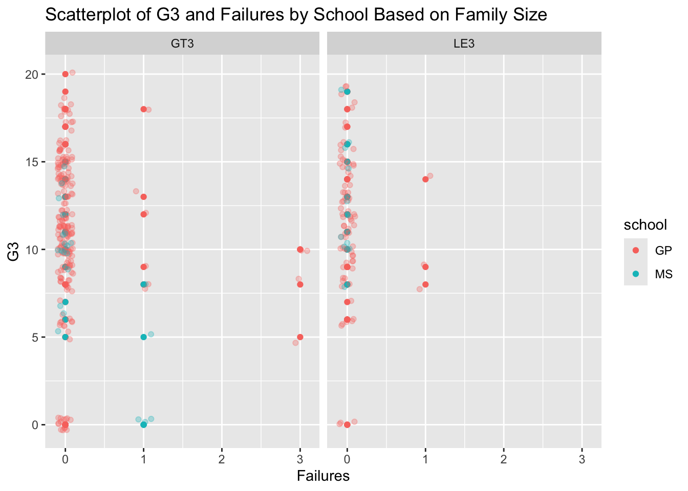
There are a lot of students from GP who are in a family of greater than 3. There are more failures for people who have a family size greater than 3. For example, all of the students who failed 3 times are included in the family size greater than 3 category. MS had a relatively low fail rate based on this graph.
Repeating the scatter plots but using faceting for two categorical variables
G3_age_facet2 <-ggplot(exercise_combine, aes(x = age, y = G3.x, color = sex)) +geom_point() +geom_jitter(width =0.1, alpha =0.3) +labs(title ="Scatterplot of G3 and Age by Sex Based on School and Internet Access", x ="Age", y ="G3") +facet_grid(rows =vars(internet), cols =vars(school))G3_age_facet2
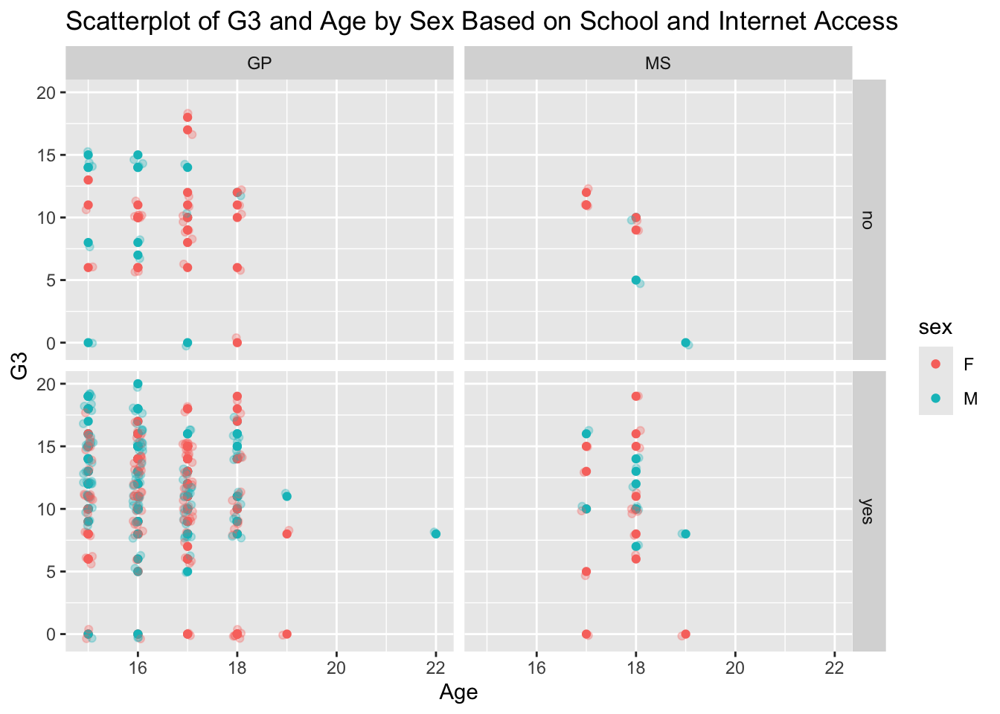
A large portion of the data has internet access and goes to GP. Once again it looks like younger males hold the highest test scores compared to younger females. However, the females age 17-18 have the highest test scores. Ther are more females than males from GP who do not have internet access. I think this point is interesting because it makes me wonder why females have less access to internet.
G3_failures_facet2 <-ggplot(exercise_combine, aes(x = failures, y = G3.x, color = school)) +geom_point() +geom_jitter(width =0.1, alpha =0.3) +labs(title ="Scatterplot of G3 and Failures by School and Activities", x ="Failures", y ="G3") +facet_grid(rows =vars(famsize), cols =vars(activities))G3_failures_facet2
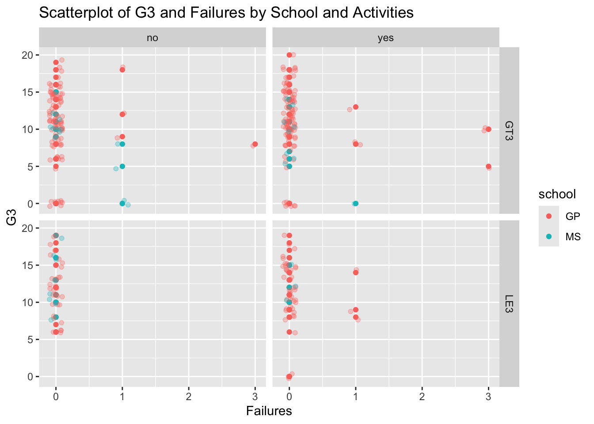
There are a lot more data points for GP than MS. It looks like students that participate in activities have more failures when they have a family size greater than 3. A majority of students did not have any failures at all.